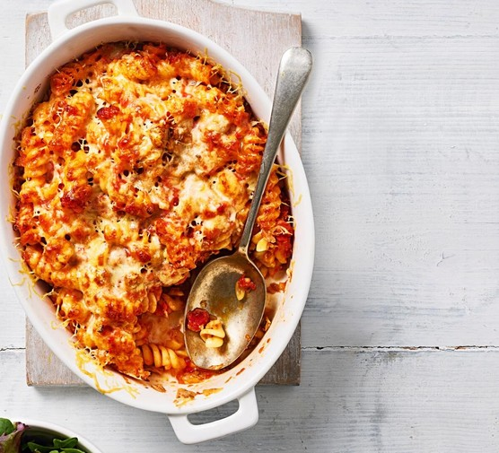

Home
Tuna Pasta Bake

Description
Tuna pasta bake is a casserole comprised of baked pasta, a sauce of some kind (white sauce or otherwise) with tuna mixed in. This is then put into the oven to cook before cheese is added on top to melt.
Ingredients
- 200 grams of Fusili pasta
- 1 tablespoon of olive oil
- 1 finely chopped onion
- 2 crushed cloves of garlic
- A pinch of dried chilli flakes (optional)
- 400g of tinned chopped tomatoes
- 200g of tuna in olive oil (drained)
- 1 teaspoon of rosemary
- 75 grams of cheddar cheese
Steps
- Cook the fusili pasta to the instructions on the pack, and then drain.
- Preheat the oven to 190 degrees celsius.
- Heat the olive oil in a pan.
- Add onion and cook for 10 minutes until softened.
- Add garlic (and chilli flakes if using) and cook for three minutes.
- Add the tinned tomatoes and half a tin of water and simmer for ten minutes.
- Stir tuna into the sauce and add rosemary (if using) as well as the drained pasta and tip into a baking dish.
- Scatter cheese over top and bake for 20-25 minutes.